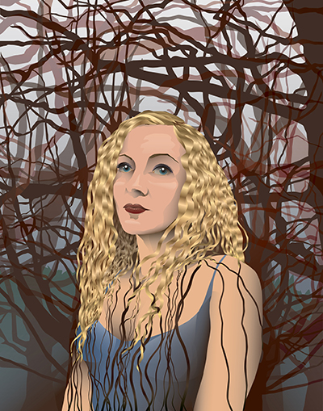

Curiosity, 2015. Adobe Illustrator Image.
Trinity Coyle
I am an artist and graphic designer based out of New York, NY. I have studied at California University of Pennsylvania (BA Art 2001), The Fashion Institute of Technology, The Art Student's League of New York, and Baruch College (Graphic Design Certification 2014). I specialize in two-dimensional art, working mostly in pen and ink and printmaking, though I have much experience in painting, sculpture, assemblage and mixed media. I am an avid photographer and have worked in both digital and traditional photography techniques. I work mostly through the Adobe Creative Cloud, especially in Photoshop CS6 and Illustrator CS6. I use Dreamweaver CS6 to structure my web pages, applying my extensive programming knowledge in HTML and CSS, JavaScript and jQuery.
Resume PDF